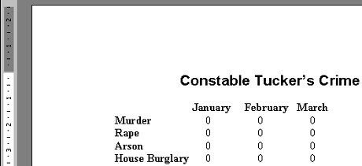
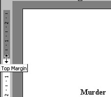
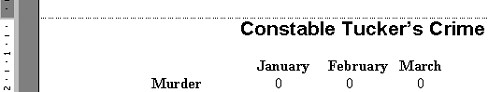
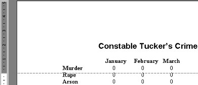
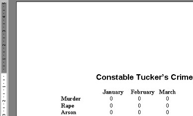

Free
computer Tutorials
|
Free
computer Tutorials
|
|
 home home |
|
||||
Page Margins in Microsoft WordIf you look at the ruler bar on the left of your screen, you'll see grey areas at the top and bottom of the left ruler, and a white area in the middle. The grey areas are your top and bottom margins. There are a number of ways you can adjust your page margins in Microsoft Word. (If you can't see a ruler on the left hand side, from the menu click on View. From the drop down list, select Print Layout.) We'll adjust the Top margin for our report. The ruler bar on the left of the screen currently looks like this:  As you can see, there's a grey area to the left, and underneath a white area. The white areas have numbers in them. If you trace your finger from the bottom of the grey area across and to "Constable Tucker's Crime" you'll find they match up exactly. This is the top of our page. You can't move your cursor above the white area an into the grey. But you can change the size of the grey area, and therefore your top margin. There are a couple of ways you can change your margins in Microsoft Word. We'll start with the tricky way!


Before you let go of the mouse button:  After you let go of the mouse button:  Notice how our top margin has jumped down. We now have a bigger gap at the top, and therefore more space.
OK, that was the tricky way to adjust a top margin. In the next section, we'll look at another way to change your page margins in Microsoft Word. Learn another way to change Page Margins in Word --> |
|||||
|